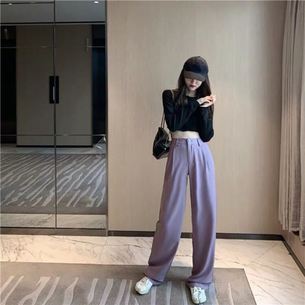

1. QUẦN ỐNG RỘNG

Các buổi tiệc thâu đêm suốt sáng tại quán bar biến mất. Thay vào đó là những buổi hội hè tại nhà riêng. Có thể là brunch cuối tuần, hay một bữa tiệc trà. Những buổi tiệc này đòi hòi trang phục thanh nhã và nữ tính. Vì vậy, trên sàn diễn Xuân Hè 2021 một lần nữa xuất hiện các mẫu váy xuân điệu đàng. Thiết kế tay áo phồng và thân váy suông xếp của thời đại 1940 trở lại. Phom dáng này xuất hiện trong các bộ sưu tập của Rodarte, Coach và Alessandra Rich..